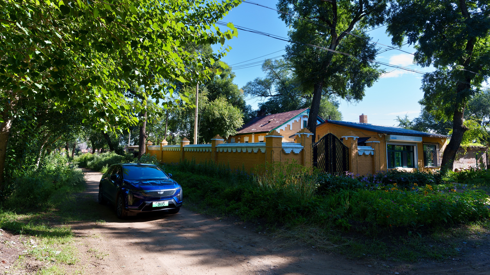
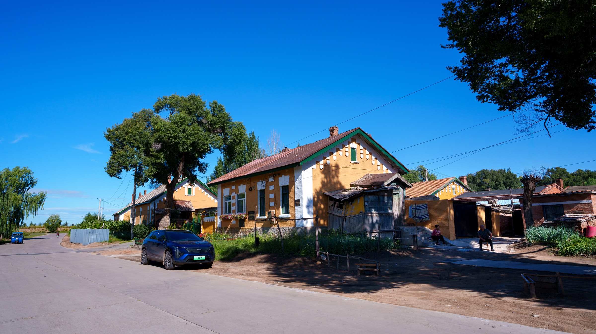
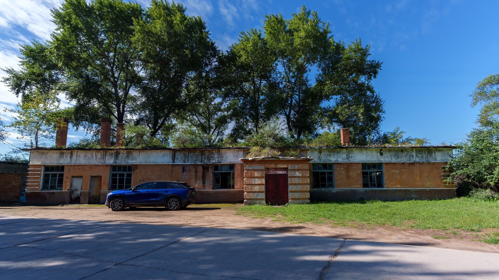
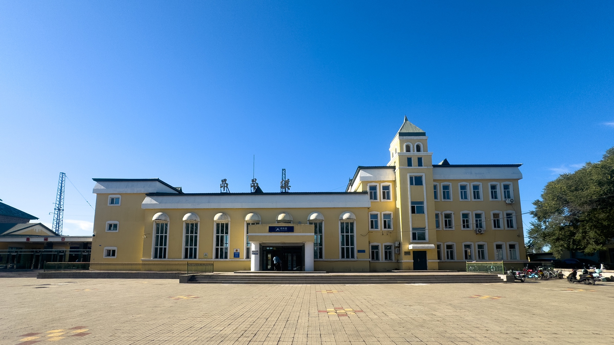

昂昂溪，距齐齐哈尔城区约25公里。它的区域范围不大，那座小小的火车站却值得在中国铁路史上记上一笔。得知这里还留着中东铁路时期的老街，我便借着这次蒙东自驾之旅，特意来看看这片一百多年前的遗迹。
导航到“昂昂溪站”，一打开车门，就听见站里的广播：开往齐齐哈尔的列车马上就要进站了。
因为车站很小，又离齐齐哈尔站不远，我原以为只有少量短途慢车停靠。实际上，这里曾是中东铁路上的重要车站，并长期位于联结欧亚的铁路线路上。过去，北京至莫斯科的K19/20次国际列车也曾按固定时刻停靠昂昂溪。

昂昂溪站建于二十世纪初。中东铁路通车之初，这里曾以“齐齐哈尔站”之名运营，后来才改称昂昂溪站。所谓“中东铁路”，是俄国为连接西伯利亚铁路与海参崴而在中国东北修建的铁路。它不仅改变了东北的城市与交通格局，也是沙俄在华扩张的产物。二战结束后，这条铁路仍经历了一段中苏共同管理时期，直到1952年才由中国收回全部权益。
离开车站几百米，就看到一片布满黄色老房子的街区，路边立着一块醒目的牌子：罗西亚大街。“罗西亚”应当是俄语国名Россия（Rossiya）的音译。

罗西亚大街的名字显然带有旅游开发的色彩。不过，当这些异国建筑被当作风情展示时，它们背后的历史也不应被淡化。那段铁路史首先关乎主权与路权，也是一段今天不太常被仔细讲起的记忆。
我沿着罗西亚大街和周边几条巷子慢慢走了一圈。街上很安静，只有寥寥几个游客。街道两旁的百年老房子，木窗高大宽阔，厚厚的外墙涂成俄式建筑常见的黄色，在晴空下格外醒目。其中不少房子现在仍有人居住，我的照片里就有一对老人坐在房前的树荫下乘凉。

这些年，各地修了不少仿古老城、老街，吸引游人纷至沓来。昂昂溪这样真正留有历史遗迹的地方，反倒很少为人所知。我倒很愿意多到这样的地方走走看看。
